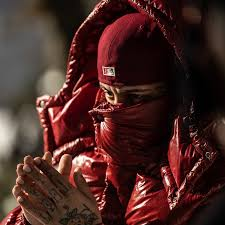

Nuestro Equipo
Todo el Equipo Unido
Somos un equipo comprometido con la excelencia, listos para hacer de tu evento un éxito. Con años de experiencia combinada, garantizamos un servicio atento, profesional y adaptado a tus necesidades.
Trabajador del Mes
Aún por determinar
¡El miembro del equipo con la mejor valoración aparecerá aquí!
Preguntas Frecuentes
Cubrimos una amplia gama de eventos, incluyendo bodas, XV años, bautizos, fiestas de cumpleaños, eventos corporativos, graduaciones, posadas y cualquier celebración donde necesites un servicio de meseros profesional y eficiente.
Recomendamos contratar el servicio con al menos 2 semanas de anticipación, especialmente para eventos en fines de semana o fechas muy solicitadas. Sin embargo, no dudes en contactarnos para disponibilidad de último momento.
Nombre del Titular: Silvia Mejia Enriquez
Numero de tarjeta: 5204 1659 3821 7993
Banco que la respalda: Banamex
Mandar una captura de pantalla al número que esta al final de esta página web.
El costo varía según el número de meseros requeridos, la duración del evento y la ubicación exacta. Contáctanos con los detalles de tu evento para ofrecerte una cotización personalizada y sin compromiso. (nuestro servicio tiene la opcion de horas extras despues de haber concluido su servicio, el servcio se vende por separado)
Sí, nuestro equipo asiste con un uniforme estándar y profesional: pantalón negro de vestir, camisa blanca de manga larga, corbata o moño (opcional según el evento) y zapatos negros. Si tienes algún requerimiento especial de vestimenta, podemos conversarlo.
El servicio incluye la atención a los invitados, servir alimentos y bebidas, mantener las mesas limpias y despejadas, y asistir en tareas generales relacionadas con el servicio durante el tiempo contratado. No incluye montaje/desmontaje de mobiliario pesado o decoración extensa, a menos que se acuerde previamente.
Nuestro enfoque principal es el municipio de Nicolás Romero. Sin embargo, podemos considerar eventos en municipios aledaños como Atizapán de Zaragoza, Tlalnepantla, Cuautitlán Izcalli, dependiendo de la distancia y la logística. Esto podría implicar un costo adicional por traslado.
Cada trabajador podra ser evaluado en un rango de 0 a 5 estrellas, esto permitira ver reflejado el esfuerzo y dedicación de cada mesero mediante la sección "Trabajador del Mes", el fin de esta sección es valorar el esfuerzo de nuestro compañero y motivar a los demás a lograr ese puesto
Contáctanos
¿Listos para que tu evento sea inolvidable? ¡Hablemos!
Teléfono / WhatsApp: 56 5674 8894 +52 56 5674 8894
Email: silviamejia832@gmail.com
Email: jorgecamachx@gmail.com (Desarrollador de la Página Web)
¡Atendemos en todo Nicolás Romero!